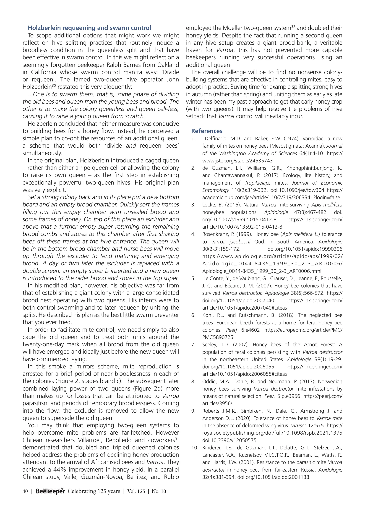

Holzberlein requeening and swarm control
To scope additional options that might work we might
reflect on hive splitting practices that routinely induce a
broodless condition in the queenless split and that have
been effective in swarm control. In this we might reflect on a
seemingly forgotten beekeeper Ralph Barnes from Oakland
in California whose swarm control mantra was: ‘Divide
or requeen’. The famed two-queen hive operator John
Holzberlein30 restated this very eloquently:
...One is to swarm them, that is, some phase of dividing
the old bees and queen from the young bees and brood. The
other is to make the colony queenless and queen cell-less,
causing it to raise a young queen from scratch.
Holzberlein concluded that neither measure was conducive
to building bees for a honey flow. Instead, he conceived a
simple plan to co-opt the resources of an additional queen,
a scheme that would both ‘divide and requeen bees’
simultaneously.
In the original plan, Holzberlein introduced a caged queen
– rather than either a ripe queen cell or allowing the colony
to raise its own queen – as the first step in establishing
exceptionally powerful two-queen hives. His original plan
was very explicit:
Set a strong colony back and in its place put a new bottom
board and an empty brood chamber. Quickly sort the frames
filling out this empty chamber with unsealed brood and
some frames of honey. On top of this place an excluder and
above that a further empty super returning the remaining
brood combs and stores to this chamber after first shaking
bees off these frames at the hive entrance. The queen will
be in the bottom brood chamber and nurse bees will move
up through the excluder to tend maturing and emerging
brood. A day or two later the excluder is replaced with a
double screen, an empty super is inserted and a new queen
is introduced to the older brood and stores in the top super.
In his modified plan, however, his objective was far from
that of establishing a giant colony with a large consolidated
brood nest operating with two queens. His intents were to
both control swarming and to later requeen by uniting the
splits. He described his plan as the best little swarm preventer
that you ever tried.
In order to facilitate mite control, we need simply to also
cage the old queen and to treat both units around the
twenty-one-day mark when all brood from the old queen
will have emerged and ideally just before the new queen will
have commenced laying.
In this smoke a mirrors scheme, mite reproduction is
arrested for a brief period of near bloodlessness in each of
the colonies (Figure 2, stages b and c). The subsequent later
combined laying power of two queens (Figure 2d) more
than makes up for losses that can be attributed to Varroa
parasitism and periods of temporary broodlessness. Coming
into the flow, the excluder is removed to allow the new
queen to supersede the old queen.
You may think that employing two-queen systems to
help overcome mite problems are far-fetched. However
Chilean researchers Villarroel, Rebolledo and coworkers31
demonstrated that doubled and tripled queened colonies
helped address the problems of declining honey production
attendant to the arrival of Africanised bees and Varroa. They
achieved a 44% improvement in honey yield. In a parallel
Chilean study, Valle, Guzmán-Novoa, Benítez, and Rubio
employed the Moeller two-queen system32 and doubled their
honey yields. Despite the fact that running a second queen
in any hive setup creates a giant brood-bank, a veritable
haven for Varroa, this has not prevented more capable
beekeepers running very successful operations using an
additional queen.
The overall challenge will be to find no nonsense colony-
building systems that are effective in controlling mites, easy to
adopt in practice. Buying time for example splitting strong hives
in autumn (rather than spring) and uniting them as early as late
winter has been my past approach to get that early honey crop
(with two queens). It may help resolve the problems of hive
setback that Varroa control will inevitably incur.
References
1.
Delfinado, M.D. and Baker, E.W. (1974). Varroidae, a new
family of mites on honey bees (Mesostigmata: Acarina). Journal
of the Washington Academy of Sciences 64(1):4-10. https://
www.jstor.org/stable/24535743
2.
de Guzman, L.I., Williams, G.R., Khongphinitbunjong, K.
and Chantawannakul, P. (2017). Ecology, life history, and
management of Tropilaelaps mites. Journal of Economic
Entomology 110(2):319-332. doi:10.1093/jee/tow304 https://
academic.oup.com/jee/article/110/2/319/3063341?login=false
3.
Locke, B. (2016). Natural Varroa mite-surviving Apis mellifera
honeybee
populations.
Apidologie
47(3):467-482.
doi.
org/10.1007/s13592-015-0412-8
https://link.springer.com/
article/10.1007/s13592-015-0412-8
4.
Rosenkranz, P. (1999). Honey bee (Apis mellifera L.) tolerance
to Varroa jacobsoni Oud. in South America. Apidologie
30(2-3):159-172.
doi.org/10.1051/apido:19990206
https://www.apidologie.org/articles/apido/abs/1999/02/
Apidologie_0044-8435_1999_30_2-3_AR T0006/
Apidologie_0044-8435_1999_30_2-3_ART0006.html
5.
Le Conte, Y., de Vaublanc, G., Crauser, D., Jeanne, F., Rousselle,
J.-C. and Bécard, J.-M. (2007). Honey bee colonies that have
survived Varroa destructor. Apidologie 38(6):566-572. https://
doi.org/10.1051/apido:2007040
https://link.springer.com/
article/10.1051/apido:2007040#citeas
6.
Kohl, P.L. and Rutschmann, B. (2018). The neglected bee
trees: European beech forests as a home for feral honey bee
colonies. Peerj 6:e4602 https://europepmc.org/article/PMC/
PMC5890725
7.
Seeley, T.D. (2007). Honey bees of the Arnot Forest: A
population of feral colonies persisting with Varroa destructor
in the northeastern United States. Apidologie 38(1):19-29.
doi.org/10.1051/apido:2006055
https://link.springer.com/
article/10.1051/apido:2006055#citeas
8.
Oddie, M.A., Dahle, B. and Neumann, P. (2017). Norwegian
honey bees surviving Varroa destructor mite infestations by
means of natural selection. PeerJ 5:p.e3956. https://peerj.com/
articles/3956/
9.
Roberts J.M.K., Simbiken, N., Dale, C., Armstrong J. and
Anderson D.L. (2020). Tolerance of honey bees to Varroa mite
in the absence of deformed wing virus. Viruses 12:575. https://
royalsocietypublishing.org/doi/full/10.1098/rspb.2021.1375
doi:10.3390/v12050575
10. Rinderer, T.E., de Guzman, L.I., Delatte, G.T., Stelzer, J.A.,
Lancaster, V.A., Kuznetsov, V.I.C.T.O.R., Beaman, L., Watts, R.
and Harris, J.W. (2001). Resistance to the parasitic mite Varroa
destructor in honey bees from far-eastern Russia. Apidologie
32(4):381-394. doi.org/10.1051/apido:2001138.
40 |
Celebrating 125 years | Vol. 125 | No. 10